Figura 4 – Tela inicial (a), pergunta da avaliação de risco com orientação (b) e resumo das respostas (c)
 (a)
(a)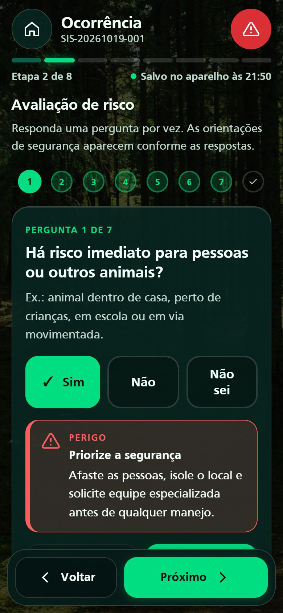
(b)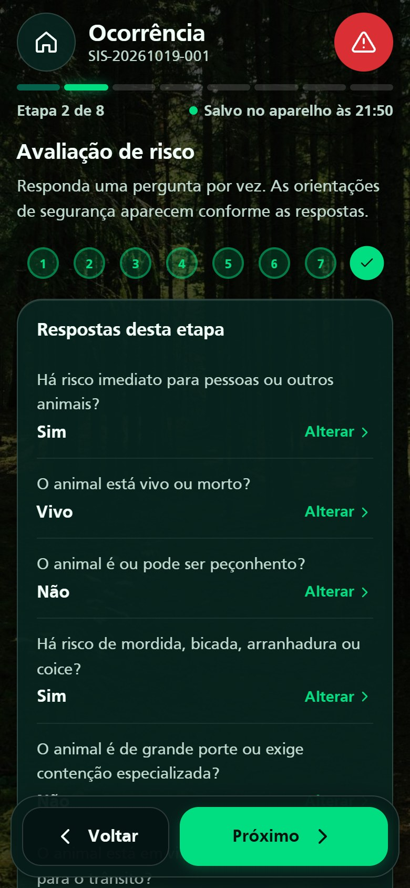
(c)Fonte: elaborado pelos autores (2026), com dados fictícios.
SISTRAFA: aplicação web progressiva para triagem de risco e manejo de fauna silvestre em operações de campo
SISTRAFA: a progressive web application for risk triage and wildlife handling in field operations
Pedro Paulo de Lima1, Carolina Paula de Almeida1, Jayme Augusto Peres2
1Departamento de Ciência da Computação (DECOMP) – Universidade Estadual do Centro-Oeste (UNICENTRO)
2Laboratório de Anatomia Patológica Veterinária – Universidade Estadual do Centro-Oeste (UNICENTRO)
CEP 85040-167 – Guarapuava – PR – Brasil
pppedro95@gmail.com, carol@unicentro.br, perespatologia@gmail.com
Resumo: Ocorrências com animais silvestres em áreas urbanas e rurais são frequentemente atendidas por policiais e bombeiros sem formação específica em manejo de fauna, o que pode expor agentes, população e animais a riscos e comprometer a documentação de eventuais crimes ambientais. Este artigo apresenta o SISTRAFA, uma aplicação web progressiva desenvolvida em estágio-pesquisa do curso de Ciência da Computação da Universidade Estadual do Centro-Oeste para apoiar o registro e a triagem de risco dessas ocorrências em campo. A aplicação foi implementada com HTML5, CSS3 e JavaScript, sem servidor de dados, e utiliza Service Worker, localStorage e IndexedDB para funcionar sem conexão após o primeiro acesso. O atendimento é organizado em oito etapas, com perguntas condicionais apresentadas uma por vez, um checklist operacional baseado em protocolo de atuação policial e um conjunto de 22 regras que gera orientações acompanhadas de justificativa. O sistema permite cadastrar animais individuais ou em lotes, registra fotografias com metadados, código SHA-256 e histórico de alterações, preservando o arquivo original, reúne um guia de 29 espécies complementado por dados da API do iNaturalist e gera relatório em PDF no próprio aparelho. A avaliação usou testes automatizados no Chrome, Edge, Firefox e emulador Android, que verificaram persistência dos dados, funcionamento sem conexão, geração de relatórios, leiaute em 12 dimensões de tela e contraste de cores. Os resultados indicam que os requisitos levantados foram atendidos no ambiente testado; a validação do conteúdo de manejo por especialistas e os testes em dispositivos físicos e com usuários são as próximas etapas.
Palavras-chave: aplicação web progressiva; fauna silvestre; triagem de risco; armazenamento offline; segurança pública.
Abstract: Incidents involving wild animals in urban and rural areas are frequently handled by police officers and firefighters without specific training in wildlife handling, which may expose agents, the public and the animals to risk and compromise the documentation of possible environmental crimes. This paper presents SISTRAFA, a progressive web application developed during a research internship in the Computer Science program at the Universidade Estadual do Centro-Oeste to support the recording and risk triage of such incidents in the field. The application was implemented with HTML5, CSS3 and JavaScript, without a data server, and uses a Service Worker, localStorage and IndexedDB to work offline after the first access. Each incident is organized in eight steps, with conditional questions presented one at a time, an operational checklist based on a police field protocol and a set of 22 rules that produces guidance together with its justification. The system supports recording individual animals or batches, stores photographs with metadata, a SHA-256 hash and a change history while preserving the original file, provides a guide of 29 species complemented by data from the iNaturalist API, and generates a PDF report on the device. The evaluation used automated tests in Chrome, Edge, Firefox and the Android emulator, covering data persistence, offline operation, report generation, layout in 12 screen sizes and color contrast. The results indicate that the gathered requirements were met in the tested environment; content validation by wildlife specialists and tests on physical devices and with users are the next steps.
Keywords: progressive web app; wildlife; risk triage; offline storage; public safety.
Ocorrências envolvendo animais silvestres, como resgates em residências e vias públicas, animais feridos ou atropelados e apreensões em ações de fiscalização, são atendidas com frequência por policiais e bombeiros. No Paraná, a rede estadual de centros de triagem registrou 6.025 acolhimentos de animais silvestres em 2025, com aumento de 61,3% em um ano; desse total, 574 animais foram atendidos pelo Centro de Triagem e Reabilitação de Animais Silvestres da Universidade Estadual do Centro-Oeste (CETRAS/UNICENTRO), em Guarapuava, que recebe animais provenientes de apreensões, resgates em áreas urbanas e entregas voluntárias (Oliveira, 2026).
Nesses atendimentos, o agente precisa decidir como se aproximar, conter, transportar, registrar e encaminhar animais de espécies que muitas vezes não conhece. Condutas inadequadas podem causar acidentes: a maioria dos acidentes ofídicos no Brasil é causada por serpentes do grupo botrópico (Brasil, 2024, p. 14), e procedimentos equivocados, como o uso de torniquete, podem agravar o envenenamento (Brasil, 2024, p. 159). Quando há suspeita de crime ambiental, a documentação também tem consequências: os animais apreendidos são recebidos nos Centros de Triagem de Animais Silvestres (Cetas) mediante apresentação dos documentos da apreensão, como boletim de ocorrência, auto de infração ou termo de apreensão (IBAMA, 2021, art. 10).
O problema tratado neste trabalho é a falta de uma orientação padronizada que o agente possa consultar durante o atendimento, muitas vezes em locais sem conexão com a internet. Os sistemas institucionais existentes, como o Sistema de Informações dos Cetas (SisCetas), destinam-se ao registro feito nos centros de triagem (IBAMA, 2021, art. 12 e 19), e não ao apoio ao agente no local da ocorrência.
Este artigo apresenta o SISTRAFA, aplicação desenvolvida no estágio-pesquisa do curso de Ciência da Computação da UNICENTRO. O objetivo geral foi investigar, projetar e desenvolver uma aplicação web progressiva (PWA, do inglês Progressive Web App), construída com HTML5, CSS3 e JavaScript, de apoio ao manejo, à triagem de risco e ao registro fotográfico de ocorrências com fauna silvestre, operável sem conexão por agentes de campo. Os objetivos específicos foram: aplicar técnicas de persistência local de dados e de cache para operação sem conexão; implementar o fluxo condicional de triagem de segurança; construir o cadastro de ocorrências individuais e em lotes, com fotografias vinculadas; implementar a extração de metadados das imagens e a geração de relatórios em PDF; e estruturar um guia de consulta de fauna e um catálogo de contatos regionais para destinação.
O artigo está organizado da seguinte forma: a Seção 2 apresenta a fundamentação teórica; a Seção 3, os trabalhos relacionados; a Seção 4, os materiais e métodos; a Seção 5, o desenvolvimento; a Seção 6, os resultados e a discussão; e a Seção 7, as considerações finais.
Esta seção apresenta os conceitos técnicos e normativos que orientaram as decisões de projeto: a arquitetura de aplicações web progressivas, os mecanismos de armazenamento no navegador, o marco legal e os protocolos de saúde aplicáveis às ocorrências com fauna, os recursos de integridade e metadados de imagens e os critérios de acessibilidade adotados.
Uma aplicação web progressiva é uma aplicação construída com tecnologias da web que utiliza recursos dos navegadores para oferecer comportamento semelhante ao de aplicativos nativos, como instalação no dispositivo e funcionamento sem conexão (MDN Web Docs, 2026b). O componente central é o Service Worker, um script que atua como intermediário entre a aplicação, o navegador e a rede: ele intercepta as requisições e pode respondê-las com recursos previamente armazenados em cache, o que permite o uso da aplicação sem conexão (MDN Web Docs, 2026c; W3C, 2026a). O manifesto da aplicação web descreve nome, ícones e modo de exibição, informações usadas pelo sistema operacional na instalação (W3C, 2026b).
Biørn-Hansen, Majchrzak e Grønli (2017) analisam as PWAs como possível tecnologia de unificação entre aplicações web e nativas e comparam seu desempenho com o de aplicativos multiplataforma desenvolvidos para o mesmo fim. Em trabalho posterior, Majchrzak, Biørn-Hansen e Grønli (2018) discutem a abordagem para o desenvolvimento multiplataforma e as questões em aberto para sua adoção. Para este projeto, a PWA permitiu manter uma única base de código, sem depender de lojas de aplicativos.
A API Web Storage oferece o armazenamento localStorage, que guarda pares de chave e valor em texto associados à origem da aplicação (MDN Web Docs, 2026e); os navegadores limitam esse armazenamento a 5 MiB por origem (MDN Web Docs, 2026d). O IndexedDB é uma API de baixo nível para armazenamento, no cliente, de volumes maiores de dados estruturados, incluindo arquivos, com suporte a índices e transações (MDN Web Docs, 2026a).
Os dados armazenados pelos navegadores estão sujeitos a cotas e critérios de remoção. No modo padrão, os dados persistem enquanto a origem estiver abaixo da cota e houver espaço no dispositivo; sob falta de espaço, os navegadores removem primeiro os dados das origens usadas há mais tempo. A aplicação pode solicitar armazenamento persistente pelo método navigator.storage.persist(), e o Safari remove dados criados por script em origens sem interação do usuário nos últimos sete dias de uso do navegador (MDN Web Docs, 2026d). Esses critérios influenciaram as decisões de armazenamento descritas na Seção 5.
A Lei nº 9.605/1998 tipifica como crime matar, perseguir, caçar, apanhar ou utilizar espécimes da fauna silvestre sem a devida permissão (Brasil, 1998, art. 29) e determina que os animais apreendidos sejam prioritariamente libertados em seu habitat ou, quando isso for inviável ou não recomendável por questões sanitárias, entregues a zoológicos, fundações ou entidades assemelhadas (Brasil, 1998, art. 25, § 1º). O Decreto nº 6.514/2008 inclui os centros de triagem entre os destinos possíveis dos animais apreendidos (Brasil, 2008, art. 107, I).
A Instrução Normativa (IN) Ibama nº 5/2021 estabelece as diretrizes e os procedimentos para a operação dos Cetas e para a destinação de animais apreendidos, resgatados ou entregues espontaneamente (IBAMA, 2021, art. 1). Na triagem, os animais passam por conferência da identificação taxonômica, avaliação clínica, física e comportamental e registro no SisCetas (IBAMA, 2021, art. 12). A mesma norma revogou a IN Ibama nº 23/2014, que tratava do tema anteriormente (IBAMA, 2021, art. 40).
Na área da saúde, o Guia de Animais Peçonhentos do Brasil reúne critérios de identificação, como a fosseta loreal das serpentes peçonhentas (Brasil, 2024, p. 24) e a recomendação de considerar peçonhenta toda serpente com anéis coloridos em volta do corpo (Brasil, 2024, p. 25), além das condutas de primeiros socorros: lavar o local com água e sabão, manter a vítima em repouso com o membro elevado e não fazer torniquete, cortes ou sucção (Brasil, 2024, p. 163-164; Fundação Nacional de Saúde, 2001, p. 103). O Guia de Vigilância de Epizootias em Primatas Não Humanos estabelece que a morte desses animais deve ser notificada à Secretaria Municipal de Saúde, por se tratar de evento sentinela da febre amarela (Brasil, 2014, p. 12), e o Ministério da Saúde orienta que morcegos e outros animais silvestres não sejam tocados, devido ao risco de raiva (Brasil, [2026]).
No campo operacional, Dallabrida et al. (2026), em manuscrito em elaboração por pesquisadores da UNICENTRO e da Polícia Militar do Paraná, propõem um protocolo de atuação policial em apreensões de fauna silvestre, baseado em revisão narrativa de diretrizes nacionais e internacionais. O protocolo organiza o atendimento em avaliação inicial, segurança da equipe, manejo e contenção, transporte, registro e destinação, reunidos em um checklist operacional, e recomenda, entre outros pontos, avaliar o cenário à distância, usar EPI conforme o risco, registrar o cenário antes de qualquer intervenção e não realizar soltura imediata sem avaliação técnica.
O padrão Exif define a estrutura de metadados gravados em imagens por câmeras e celulares, incluindo data e hora da captura, fabricante e modelo do dispositivo e coordenadas geográficas (Camera & Imaging Products Association, 2026). Para verificar se um arquivo foi alterado após o registro, pode-se calcular seu resumo criptográfico pelo algoritmo SHA-256 (National Institute of Standards and Technology, 2015): qualquer modificação no arquivo produz um resumo diferente. Nos navegadores, esse cálculo é disponibilizado pelo método digest da API Web Cryptography (W3C, 2025). Esses recursos não substituem os procedimentos formais de cadeia de custódia, mas permitem que o registro fotográfico produzido em campo seja conferido posteriormente.
As Diretrizes de Acessibilidade para Conteúdo Web (WCAG) 2.2 estabelecem, no nível AA, razão de contraste de no mínimo 4,5:1 entre texto e fundo (critério 1.4.3) e área de toque mínima de 24 por 24 pixels CSS (critério 2.5.8); no nível AAA, recomendam alvos de 44 por 44 pixels CSS (critério 2.5.5) (W3C, 2023). Em campo, o uso sob luz solar, com luvas e com apenas uma das mãos reforça a necessidade de contraste elevado e de alvos de toque amplos.
Lima et al. (2021) apresentam o aplicativo Último Recurso, desenvolvido com Flutter para Android, que orienta a população sobre as ações após acidentes com animais peçonhentos e apoia profissionais de saúde com informações como o soro indicado e a identificação de espécies por imagens. O foco do trabalho é o atendimento à vítima do acidente, e não o manejo do animal ou o registro da ocorrência.
Chame et al. (2019) descrevem o SISS-Geo, plataforma da Fundação Oswaldo Cruz baseada em ciência cidadã para o monitoramento da saúde da fauna silvestre. Colaboradores registram, por aplicativos para Android e iOS, observações georreferenciadas e fotografias dos animais e de suas condições físicas; os dados alimentam modelos de alerta, aplicados, por exemplo, a epizootias de febre amarela. O SISS-Geo é voltado à vigilância em saúde, e não à triagem de risco durante o atendimento.
O iNaturalist é uma plataforma de registro de observações de biodiversidade na qual a comunidade contribui para a identificação das espécies; seus dados são disponibilizados por uma interface de programação pública (iNaturalist, [2026]), utilizada pelo SISTRAFA como fonte complementar do guia de fauna. O Quadro 1 compara esses trabalhos com a proposta deste artigo. Entre os trabalhos analisados, nenhum combina, em um mesmo sistema voltado a agentes de segurança pública, triagem condicional com orientações justificadas, cadastro de animais em lotes, registro fotográfico com verificação de integridade e relatório gerado sem conexão.
Quadro 1 – Comparação entre os trabalhos relacionados e o SISTRAFA
| Trabalho | Público-alvo | Plataforma | Funções principais |
|---|---|---|---|
| Último Recurso (Lima et al., 2021) | População e profissionais de saúde | Aplicativo Android (Flutter) | Orientação após acidentes com animais peçonhentos; identificação de espécies por imagens; indicação de soro |
| SISS-Geo (Chame et al., 2019) | Cidadãos colaboradores e vigilância em saúde | Aplicativos Android e iOS, servidor web | Registro fotográfico georreferenciado de animais e de suas condições; alertas de risco à saúde |
| iNaturalist (iNaturalist, [2026]) | Público geral e pesquisadores | Web, aplicativos e API pública | Registro de observações; identificação colaborativa; consulta a dados de espécies |
| SISTRAFA (este trabalho) | Policiais e bombeiros | Aplicação web progressiva, sem servidor de dados | Triagem de risco condicional com orientações justificadas; cadastro em lotes; fotografias com SHA-256 e histórico; guia e contatos; relatório PDF sem conexão |
Fonte: elaborado pelos autores (2026).
O trabalho combinou pesquisa aplicada com desenvolvimento iterativo e incremental de software, organizado nas quatro fases previstas no plano de estágio: investigação e fundamentação teórica, projeto centrado no usuário, desenvolvimento incremental e validação técnica.
A aplicação foi escrita em HTML5, CSS3 e JavaScript (ECMAScript 2015 ou posterior), sem frameworks de interface. O código-fonte, o APK e este artigo estão em repositório público (Lima, 2026). Duas bibliotecas de terceiros são distribuídas junto com a aplicação, para que funcionem sem conexão: jsPDF 2.5.2, para a criação de documentos PDF no navegador (Parallax, 2026), e jsPDF-AutoTable 3.8.4, para a montagem de tabelas nesses documentos (Bengtsson, 2024). O guia de fauna consulta a API pública do iNaturalist, versão 1.3.0 (iNaturalist, [2026]). Os testes automatizados foram escritos em JavaScript para o ambiente Node.js e controlam os navegadores Google Chrome 155 e Microsoft Edge 155 pelo Chrome DevTools Protocol (Google, [2026]) e o Mozilla Firefox 158 pelo protocolo WebDriver BiDi (W3C, 2026c).
Na fase de investigação, além da revisão da documentação técnica e normativa da Seção 2, os requisitos foram levantados por meio de um questionário estruturado em dez seções, respondido pelo demandante do projeto, que tratou da finalidade da aplicação, do perfil dos usuários, do fluxo da ocorrência, das perguntas de triagem, da identificação de espécies, das fotografias, dos relatórios e das funções indispensáveis (Apêndice A). As respostas foram convertidas nos requisitos apresentados na Seção 5.1 e na árvore de decisão da Seção 5.3. Na etapa final, a aplicação foi comparada item a item com o protocolo de Dallabrida et al. (2026), fornecido pela coorientação, e os itens ausentes foram incorporados (Seção 5.4).
Na fase de projeto, as telas foram concebidas para uso em celulares, com uma das mãos e sob luz solar, considerando usuários sem formação técnica em fauna. O desenvolvimento ocorreu em ciclos curtos, na ordem: fluxo condicional da ocorrência; módulo fotográfico; geração de relatório; guia de fauna e contatos; e refinamento da interface. Cada ciclo foi seguido de testes automatizados.
Na fase de validação técnica, os testes executaram os navegadores sem interface gráfica (modo headless), em computador com Windows 11, emulando telas de celular, tablet e computador. Por meio do Chrome DevTools Protocol, os testes simularam toques e preenchimentos, desativaram a rede para verificar o funcionamento sem conexão e provocaram falha de gravação por falta de espaço. Os dados usados nos testes foram fictícios e criados em perfis temporários do navegador. A coorientação e a equipe do CETRAS/UNICENTRO testaram a versão final (Seção 5.4), mas a validação sistemática do conteúdo de manejo, prevista no plano, não foi feita.
Ferramentas de inteligência artificial generativa foram utilizadas neste trabalho. O assistente de programação Claude Code (Anthropic, [2026]) foi empregado na geração e na revisão do código-fonte, na escrita dos testes automatizados, na busca e conferência preliminar de referências e na redação de versão preliminar deste artigo. O logotipo da aplicação foi gerado com o ChatGPT (OpenAI, 2026), conforme registrado nos metadados de procedência do arquivo. As decisões de projeto, a definição dos requisitos com a parte demandante e a revisão do conteúdo são de responsabilidade dos autores, que verificaram as informações e as referências antes da submissão.
Esta seção descreve os requisitos, a arquitetura e os módulos da aplicação.
O Quadro 2 apresenta os requisitos funcionais (RF) e não funcionais (RNF), com a indicação da seção do questionário de requisitos (Q), do plano de estágio ou do protocolo de Dallabrida et al. (2026), indicado como "Protocolo", que lhes deu origem.
Quadro 2 – Requisitos funcionais e não funcionais do SISTRAFA
| Código | Descrição | Origem |
|---|---|---|
| RF01 | Criar perfil local, sem conta on-line, com nome, instituição, cargo e identificação funcional; proteger o acesso por PIN opcional | Q 2.4 |
| RF02 | Abrir ocorrência com número, data, hora, responsável e localização (quando autorizada) registrados automaticamente | Q 3.2 |
| RF03 | Conduzir a triagem por perguntas condicionais, uma por vez, com orientações de segurança, manejo e encaminhamento | Q 3.5, 4.3, 4.4 |
| RF04 | Apresentar a justificativa de cada orientação | Q 4.5 |
| RF05 | Cadastrar animais individuais e lotes por grupo e espécie, destacando indivíduos que exigem atenção | Q 3.4 |
| RF06 | Permitir a opção "espécie não identificada" e manter a identificação como provisória até a confirmação | Q 5.1, 5.2 |
| RF07 | Registrar fotografias vinculadas a animal, lote ou recinto, com metadados automáticos, preservação do original e histórico de alterações | Q 6.2 a 6.4 |
| RF08 | Oferecer guia de consulta de grupos e espécies e catálogo de instituições para destinação, com indicação de atendimento 24 horas | Q 1.3, 5.1 |
| RF09 | Apresentar tela de revisão para correção das respostas antes do encerramento | Q 4.3 |
| RF10 | Gerar relatório em PDF com os itens definidos pelo demandante, cujo compartilhamento é decidido pelo usuário | Q 7.1 a 7.3 |
| RF11 | Oferecer, na tela inicial, acesso rápido a orientações para situações de risco | Q 3.1 |
| RF12 | Apresentar checklist operacional por etapa (avaliação inicial, segurança da equipe, manejo, transporte, registro e destinação) e lista de EPI | Protocolo |
| RF13 | Registrar as condições em que os animais são mantidos, o comportamento observado e as verificações feitas durante o transporte | Protocolo |
| RF14 | Registrar os horários de cada etapa, com pausas e retomadas, e a identificação de quem recebe os animais (nome, função, registro na instituição e CRMV ou documento) | Testes dos consultores |
| RNF01 | Funcionar sem conexão após o primeiro acesso, mantendo os dados somente no aparelho | Q 2.4, 10; plano |
| RNF02 | Utilizar HTML5, CSS3 e JavaScript, sem servidor de dados | Plano, seção 2.2 |
| RNF03 | Garantir legibilidade em campo: contraste mínimo de 4,5:1, tema claro, modo de alto contraste e três tamanhos de texto | Plano, seção 3.3 |
| RNF04 | Adotar alvos de toque de 44 pixels CSS e uso com uma das mãos | Plano, seção 3.3 |
| RNF05 | Declarar o caráter auxiliar da ferramenta, que não substitui documentos oficiais nem a cadeia de custódia | Q 1.1, 10 |
| RNF06 | Funcionar em celulares simples e antigos, de 280 pixels de largura em diante, em tela cheia e na posição vertical; no aplicativo Android, a partir da versão 7.0 | Uso em celular |
Fonte: elaborado pelos autores (2026).
A Figura 1 apresenta a arquitetura da aplicação, composta por quatro partes: a camada de interface, a lógica da aplicação, a persistência no aparelho e o Service Worker. A interface é uma aplicação de página única: as telas são geradas em JavaScript conforme o endereço após o caractere "#", o que permite o uso dos botões de navegação do navegador sem recarregar a página. O código-fonte próprio soma 4.859 linhas, distribuídas em um arquivo HTML, uma folha de estilos e nove arquivos JavaScript, sem contar as bibliotecas de terceiros nem o invólucro Android descrito na Seção 5.10.
Figura 1 – Arquitetura do SISTRAFA
Fonte: elaborado pelos autores (2026).
Os dados são divididos entre dois mecanismos, de acordo com os critérios da Seção 2.2. O perfil, os ajustes, as ocorrências e os contatos, que ocupam pouco espaço, ficam no localStorage; as fotografias, que podem ter vários megabytes cada, ficam no IndexedDB, em um repositório indexado pelo identificador da ocorrência. As fotografias são incluídas pelo método add, que falha se já existir um registro com o mesmo identificador, de modo que nenhuma imagem é substituída sem registro. Para reduzir o risco de remoção dos dados pelo navegador, a tela de perfil permite solicitar armazenamento persistente quando o navegador não o concede.
O Service Worker adota três estratégias de cache. Os arquivos da aplicação são buscados primeiro na rede, para receber atualizações, e no cache quando não há conexão; as imagens do guia são buscadas primeiro no cache, pois não mudam; e as respostas da API do iNaturalist são buscadas na rede e armazenadas para consulta posterior sem conexão. A cada nova versão da aplicação, o nome do cache é alterado e os arquivos antigos são removidos.
Cada ocorrência recebe um número no formato SIS-AAAAMMDD-NNN e é conduzida em oito etapas (Figura 2). O progresso é gravado a cada alteração, de modo que o atendimento pode ser interrompido e retomado. Um indicador no topo da tela mostra o resultado real da última gravação ("Salvando", "Salvo no aparelho" ou "Erro: não foi salvo").
Figura 2 – Etapas de uma ocorrência no SISTRAFA
Fonte: elaborado pelos autores (2026).
As etapas 2 e 3 apresentam uma pergunta por vez, com as respostas "Sim", "Não" e "Não sei", ou com opções específicas, conforme solicitado no questionário de requisitos para reduzir a chance de que alguma etapa seja ignorada. Algumas perguntas só aparecem em determinadas condições: a pergunta sobre a capacidade da equipe de manejar o animal com segurança é exibida apenas quando as respostas anteriores indicam risco imediato, animal peçonhento, risco de agressão ou grande porte, e a pergunta sobre as condições em que os animais são mantidos (superlotação, ventilação, exposição ao sol, sujeira, falta de água ou de abrigo) só aparece quando o animal está contido, preso, em cativeiro ou sendo transportado. Respostas de perguntas que deixam de ser exibidas, porque a resposta que as condicionava foi alterada, são desconsideradas pelas regras. A Figura 3 apresenta a árvore de decisão da avaliação de risco. Ao final de cada etapa, uma tela de resumo lista as respostas, e cada linha permite voltar à pergunta para alterá-la (Figura 4c).
Além das orientações associadas a cada resposta, um motor de regras combina as respostas da triagem com os dados dos animais cadastrados e gera, a cada atualização, uma lista de orientações ordenada por gravidade: perigo, atenção, informação e situação sem risco crítico. O motor possui 22 regras. Cada orientação traz um texto de justificativa construído a partir dos dados que a ativaram, como em "Por quê: Lote 1 (aves) apresenta ferimentos e sangramento", atendendo ao requisito RF04. Além do rótulo de cor, as orientações de perigo e atenção exibem ícone próprio e a palavra "Perigo" ou "Atenção", para que a gravidade não seja comunicada apenas pela cor. O Quadro 3 apresenta uma seleção das regras e a base de cada uma.
Quadro 3 – Seleção de regras do motor de orientações e respectivas bases
| Condição | Orientação gerada | Base |
|---|---|---|
| Risco imediato para pessoas ou animais | Afastar pessoas e isolar o local | Questionário, Q 3.5 |
| Animal peçonhento, possivelmente peçonhento ou espécie peçonhenta cadastrada | Manter distância, conter apenas com equipamento adequado e transportar em caixa rígida, trancada e identificada | Brasil (2024, p. 25); Goiás ([2014?], p. 101); Dallabrida et al. (2026) |
| Superlotação, pouca ventilação, sol, sujeira, falta de água ou de abrigo | Fotografar e, em seguida, melhorar as condições, sem soltar os animais | Dallabrida et al. (2026) |
| Fezes acumuladas, animal morto ou risco de zoonose | Luvas de nitrilo e, em ambiente com poeira ou amônia, máscara P2 | Dallabrida et al. (2026) |
| Animal ferido, com sangramento, dificuldade respiratória, debilitado, inconsciente ou apático | Atendimento veterinário prioritário, com manipulação mínima | Questionário, Q 3.5; Dallabrida et al. (2026) |
| Suspeita de crime ambiental | Documentar e preservar vestígios antes de alterar o local | Questionário, Q 3.5 |
| Suspeita de crime, apreensão, cativeiro ou transporte ilegal | Não realizar soltura imediata; encaminhar a instituição habilitada e avisar o destino | IBAMA (2021, art. 10-13); Dallabrida et al. (2026) |
| Piora registrada em verificação durante o transporte | Avisar o destino e priorizar o atendimento veterinário | Dallabrida et al. (2026) |
| Primata (bugio) morto | Notificar a vigilância em saúde do município | Brasil (2014, p. 12) |
| Morcego, sagui ou risco de zoonose | Não tocar sem luvas; em caso de mordida, lavar e procurar atendimento | Brasil ([2026]) |
| Sagui-de-tufo-preto (exótico no Paraná) | Não realizar soltura | Paraná ([2020?]) |
| Espécie ou grupo não identificado | Manter identificação provisória e adotar a conduta mais cautelosa | Questionário, Q 5.2 |
| Animais saudáveis, nativos e encontrados livres, sem crime, apreensão ou cativeiro | Avaliar soltura conforme o protocolo da instituição; na dúvida, avaliação técnica | Brasil (1998, art. 25, § 1º; 2008, art. 107, I); Dallabrida et al. (2026) |
Fonte: elaborado pelos autores (2026).
Figura 3 – Árvore de decisão da etapa de avaliação de risco
Fonte: elaborado pelos autores (2026).
Algumas regras derivam diretamente das respostas do questionário de requisitos, e não de documento oficial; elas são identificadas no Quadro 3 e constituem o principal objeto da validação de conteúdo prevista com o CETRAS/UNICENTRO. As perguntas e as 22 regras estão listadas nos Apêndices B e C. A Figura 4 apresenta a tela inicial, uma pergunta da avaliação de risco com a orientação correspondente e o resumo das respostas.
Figura 4 – Tela inicial (a), pergunta da avaliação de risco com orientação (b) e resumo das respostas (c)
(a)
(b)
(c)Fonte: elaborado pelos autores (2026), com dados fictícios.
A comparação com o protocolo de Dallabrida et al. (2026) mostrou que a versão anterior da aplicação cobria a avaliação de risco, o registro fotográfico e o encaminhamento, mas não apresentava checklist por etapa, recomendações de EPI por tipo de risco, registro das condições de acondicionamento e do comportamento dos animais, nem acompanhamento do transporte. Esses itens foram incorporados (requisitos RF12 e RF13). O checklist operacional do protocolo foi reproduzido em seis blocos, com 29 itens (Apêndice D), distribuídos nas etapas em que cada ação ocorre: avaliação inicial, segurança da equipe, manejo e contenção e transporte na etapa de manejo; registro da ocorrência na etapa de fotografias; e destinação na etapa de encaminhamento (Figura 5a). Cada bloco mostra quantos itens foram marcados, e o relatório lista todos os itens com a respectiva marcação.
A etapa de manejo passou a exibir a lista de EPI do protocolo, e as orientações por grupo foram revisadas com as técnicas de contenção e de transporte de cada grupo: aves contidas sem compressão do tórax, lagartos nunca segurados pela cauda, quelônios apoiados pelas laterais do casco, anfíbios em recipiente plástico úmido em vez de saco de pano e serpentes peçonhentas em caixa rígida, trancada e identificada. No cadastro de lotes foi incluído o comportamento observado (apatia, medo intenso, agressividade e movimentos repetitivos), e a etapa de contexto recebeu a pergunta condicional sobre as condições em que os animais são mantidos. Cinco regras novas usam essas informações (Quadro 3).
Na etapa de encaminhamento, quando o destino é uma instituição, o agente pode registrar verificações durante o transporte, com data, hora e sinais observados (Figura 5b), como o protocolo recomenda para trajetos longos; uma verificação com prostração, dificuldade respiratória, hipertermia ou óbito gera orientação de perigo. Se o agente escolher a soltura em ocorrência de apreensão, cativeiro ou suspeita de crime, a aplicação exibe um aviso e passa a apontar como pendência a falta de justificativa. O catálogo de contatos recebeu a indicação de atendimento 24 horas, sugerida nas anotações de revisão do manuscrito do protocolo e usada como critério de desempate na sugestão de instituições, e o guia recebeu a tela "Protocolo de atuação", que reúne o checklist, os EPI, os critérios de transporte e os itens de registro para consulta sem conexão (Figura 5c).
Figura 5 – Checklist operacional na etapa de manejo (a), verificações durante o transporte (b) e protocolo de atuação no guia (c)
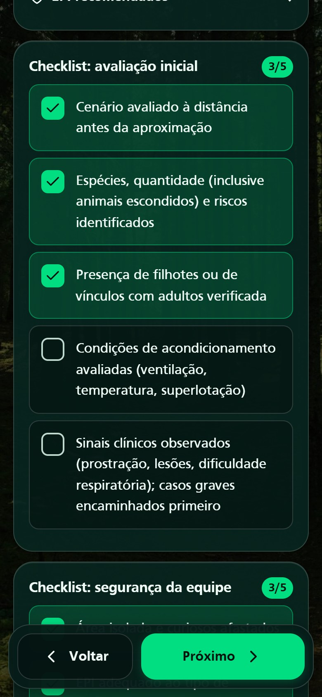
(a)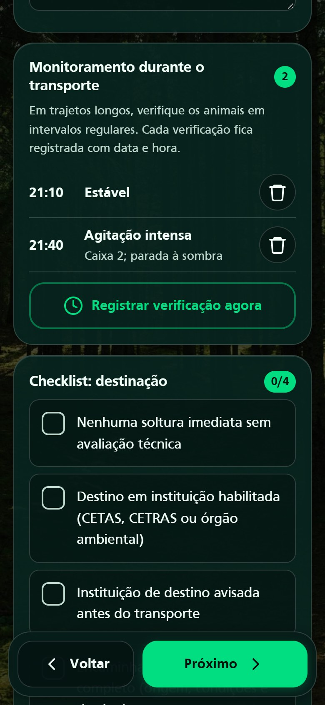
(b)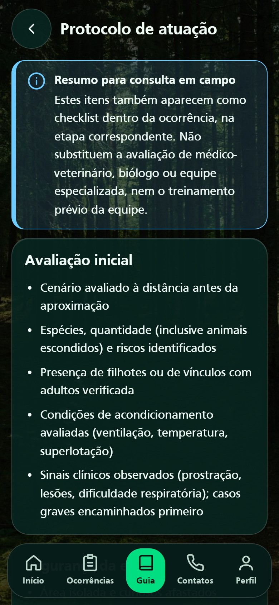
(c)Fonte: elaborado pelos autores (2026), com dados fictícios.
Após testarem a aplicação, a coorientação e a equipe do CETRAS/UNICENTRO solicitaram dois registros (RF14): a identificação de quem recebe os animais (nome, função, registro na instituição e CRMV ou documento) e a cronologia do atendimento. O histórico passou a registrar o início e a conclusão de cada etapa, as pausas (saída da ocorrência, aplicativo em segundo plano ou fechado) e as retomadas; a revisão e o relatório mostram os horários e o tempo de cada etapa, sem as pausas, e a duração total (Apêndice E).
Atendendo ao requisito RF05, uma ocorrência pode reunir registros de animais individuais e de lotes. Uma apreensão de 30 aves, por exemplo, pode ser registrada como um único lote, com a indicação das espécies e das quantidades, sem a necessidade de uma ficha por animal; somente os indivíduos que exigem atenção, como feridos, filhotes ou anilhados, são destacados dentro do lote. Para cada registro, informam-se o grupo animal, o estado (vivo ou morto), a situação em que foi encontrado, a condição geral, o comportamento observado e os riscos no manejo (Figura 6a). As espécies podem ser escolhidas no guia, buscadas na base on-line ou registradas como "espécie não identificada", e toda identificação permanece marcada como provisória até ser confirmada pelo agente. Ao escolher o grupo, a tela exibe as orientações de manejo do grupo e os cuidados específicos das espécies informadas.
As fotografias podem ser tiradas pela câmera ou escolhidas na galeria e são vinculadas a uma identificação livre (por exemplo, "Animal 1", "Lote de aves 1" ou "Gaiola 1") e a um momento da ocorrência: local, animal ou lote, vestígio, após a contenção ou entrega. No momento da gravação, a aplicação registra data, hora, autor, número da ocorrência e localização, quando autorizada; lê os metadados Exif do arquivo (data original, fabricante e modelo da câmera, resolução e coordenadas); e calcula o resumo SHA-256 do arquivo original. Se o aparelho não fornecer a localização, as coordenadas gravadas na própria foto são utilizadas, com a indicação da origem.
Após a gravação, a aplicação lê novamente o registro no IndexedDB para confirmar que a imagem foi salva e só então exibe a tela de confirmação (Figura 6b), com as opções de recortar, editar os dados ou excluir. O recorte gera uma cópia, usada na exibição e no relatório, e o arquivo original permanece inalterado. A exclusão é lógica: a foto deixa de ser exibida, mas permanece marcada como excluída, com data e motivo informados pelo usuário, no histórico e no relatório. Essas decisões atendem ao questionário de requisitos, que pediu preservar a fotografia original e manter o histórico de alterações.
Figura 6 – Cadastro de espécies de um lote (a), confirmação de fotografia salva (b) e orientações com justificativa na revisão (c)
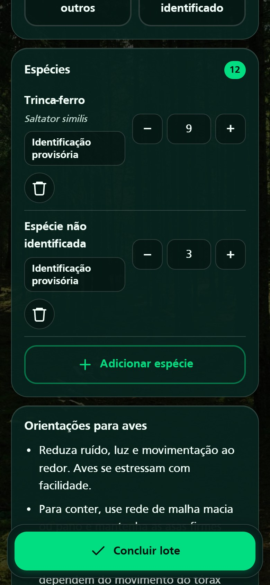
(a)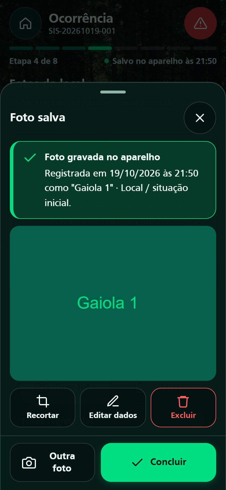
(b) (c)
(c)Fonte: elaborado pelos autores (2026), com dados fictícios e imagem de teste.
O guia contém 29 espécies de ocorrência no Paraná e na Região Sul, sendo 9 mamíferos, 7 aves, 7 répteis, 2 anfíbios e 4 invertebrados, além de orientações gerais para seis grupos, incluindo o grupo "não identificado", que recebe a conduta mais cautelosa. Cada ficha apresenta porte, características de reconhecimento, classificação de risco e cuidados no manejo (Figura 7a). Os critérios de identificação e as condutas para animais peçonhentos foram conferidos com o Guia de Animais Peçonhentos do Brasil (Brasil, 2024); durante essa conferência, três informações de duas fichas da versão inicial foram corrigidas.
Quando há conexão, a ficha é complementada por dados da API do iNaturalist: fotografias de referência com a autoria indicada, resumo descritivo, classificação, estado de conservação e número de registros. A aplicação também consulta as espécies registradas em um raio de 50 km da localização do usuário, para apoiar a comparação durante a identificação. As respostas da API são armazenadas no aparelho, apenas com os campos usados pela aplicação, com prazos de validade de 3 a 30 dias, conforme o tipo de consulta, e podem ser baixadas previamente para uso em campo. Como a documentação da API limita o número de requisições e informa que as fotografias servidas pelo iNaturalist não têm licença aberta (iNaturalist, [2026]), as imagens são exibidas apenas como referência visual, com o crédito do autor.
Cada espécie da lista do guia e da janela de cadastro exibe uma fotografia de referência, ampliada na ficha da espécie. Para reduzir o consumo de dados, as fotografias das 29 espécies são obtidas em uma única consulta, de cerca de 35 kB, guardada por 30 dias, em vez de 58 requisições; sem conexão e sem a imagem no cache, a lista mostra o ícone do grupo.
O catálogo de contatos reúne números de emergência, órgãos ambientais e de saúde e instituições de destinação, com destaque para o CETRAS/UNICENTRO, e permite que o usuário inclua e edite instituições da sua região (Figura 7b). Cada contato exibe o logotipo do órgão; o CETRAS usa o da UNICENTRO. Na etapa de encaminhamento, as instituições são ordenadas pelos grupos animais que recebem e, quando a localização está disponível, pela distância.
Figura 7 – Ficha de espécie do guia (a), catálogo de contatos (b) e tela inicial no tema claro (c)
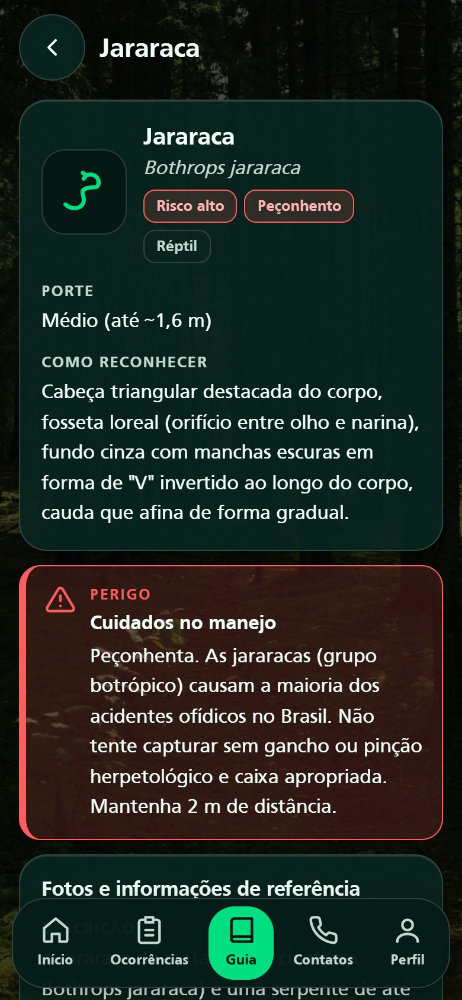
(a)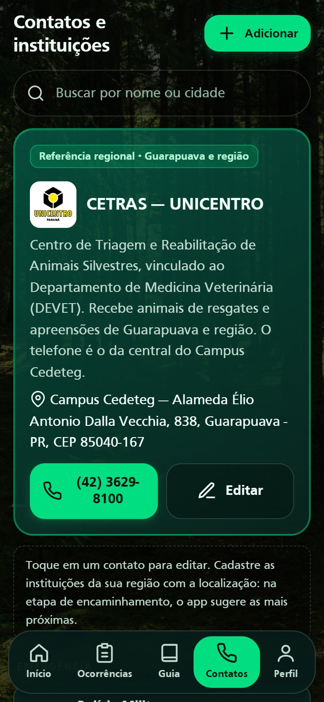
(b)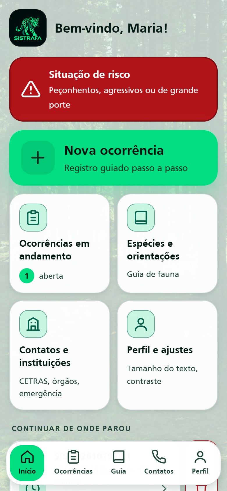
(c)Fonte: elaborado pelos autores (2026), com dados fictícios; as fotografias de terceiros fornecidas pela API do iNaturalist foram omitidas na captura.
Ao encerrar a ocorrência, a aplicação gera no próprio aparelho, com as bibliotecas jsPDF e jsPDF-AutoTable, uma ficha auxiliar em PDF com onze seções: identificação e duração do atendimento; local; respostas das duas etapas; animais e lotes; orientações com justificativa; manejo e checklist; encaminhamento e transporte; fotografias com metadados e SHA-256; observações; e horários e histórico, seguidas das assinaturas do responsável e de quem recebeu os animais, com função e CRMV ou documento (Apêndice E, Figura E.2). O rodapé de cada página declara o caráter auxiliar do documento. O arquivo pode ser baixado ou compartilhado pelos recursos do sistema operacional, e a decisão de compartilhá-lo cabe ao usuário, como definido no requisito RF10.
A interface utiliza superfícies com 93% de opacidade sobre uma fotografia de floresta escurecida. Efeitos visuais de uma versão anterior foram removidos por questão de desempenho (Seção 6.2). Para preservar a legibilidade, foram adotadas as seguintes medidas: tema claro para uso sob luz solar (Figura 7c); modo de alto contraste, que remove as transparências; três tamanhos de texto; e alvos de toque de 44 a 56 pixels CSS. A navegação também foi adaptada a leitores de tela e teclado: o foco é levado ao título a cada troca de tela, os grupos de opções são associados a seus rótulos e, enquanto uma janela está aberta, o foco permanece nela e volta ao elemento de origem quando ela é fechada.
Para a instalação sem depender de um servidor, a aplicação também foi empacotada como aplicativo Android (APK de 2,9 MB): um invólucro escrito em Java exibe o mesmo código HTML, CSS e JavaScript em um componente WebView. Os arquivos são servidos pela classe WebViewAssetLoader em um endereço HTTPS local, como recomenda a documentação do Android (Android Developers, [2026]), o que mantém localStorage, IndexedDB, Service Worker e Web Cryptography funcionando como no navegador. O invólucro trata a câmera e a galeria, a localização, o estado da conexão, a passagem para segundo plano, usada no registro de pausas, o botão Voltar, a gravação de arquivos na pasta de downloads, o compartilhamento e a impressão. O aplicativo ocupa a tela inteira e permanece na posição vertical.
Os testes automatizados da versão final somam 120 verificações em seis conjuntos (integridade e persistência, protocolo operacional, versão otimizada, Android, horários e recebimento, e Firefox), além dos testes de fluxo completo, fotografias, Exif, guia on-line e relatório (Quadro F.1, no Apêndice F). Todos foram aprovados, sem erros de JavaScript no console.
Os testes e a revisão do código identificaram falhas corrigidas durante o desenvolvimento, entre elas: perda do texto digitado quando o usuário trocava de tela antes do intervalo de 400 ms usado para agrupar gravações; ausência de retorno no envio de fotografias em alguns navegadores de celular; respostas de perguntas ocultas que continuavam a gerar orientações; transação do IndexedDB cancelada por falta de espaço que deixava a operação pendente; e respostas de erro do servidor que o Service Worker guardava no lugar da cópia válida.
A auditoria de leiaute percorreu 23 telas em 12 dimensões de celulares, de 280×653 a 480×1000 pixels CSS, com os três tamanhos de texto (828 combinações). Foram corrigidos rótulos, botões e marcadores que eram cortados ou ultrapassavam a tela nas larguras menores. Após as correções, nenhuma combinação apresentou rolagem horizontal, conteúdo fora da tela ou erro de JavaScript; apenas os marcadores de navegação entre perguntas ficam abaixo de 44 pixels de largura (de 32 a 43), acima do mínimo de 24 pixels da WCAG 2.2 (W3C, 2023).
As razões de contraste, calculadas pela fórmula da WCAG 2.2 para o pior caso da fotografia de fundo, ficaram entre 4,6:1 e 16,2:1 nos dois temas (Tabela F.1, no Apêndice F), acima do mínimo de 4,5:1 do nível AA. O cálculo usou as superfícies de uma versão anterior, mais transparente; com as da versão final, as razões são iguais ou maiores.
Quanto ao desempenho, no emulador Android sem aceleração gráfica, condição próxima à de um aparelho simples, as telas ficavam de 3 a 6 s sem conteúdo após cada troca enquanto o desfoque de fundo, o filtro de refração e o reflexo de luz estavam ativos. Esses efeitos foram removidos; o fundo e o logotipo foram reduzidos de 1.284 kB para 365 kB; as bibliotecas de PDF passaram a ser carregadas apenas na geração do primeiro relatório; e as grades de fotos passaram a usar miniaturas. Na mesma condição, as telas passaram a aparecer em cerca de 1 s.
Os resultados indicam que os requisitos do Quadro 2 foram implementados e que o funcionamento sem conexão, a persistência dos dados e a geração do relatório se comportaram como esperado no ambiente testado. A justificativa associada a cada orientação permite ao agente e a quem lê o relatório conferir por que uma conduta foi recomendada.
O trabalho tem limitações. Primeiro, os testes automatizados foram executados em computador, com emulação de dispositivos, no Chrome e no Edge, que usam o mesmo motor de renderização, e no Firefox, com menos verificações; além do uso em celular pelo autor e dos testes feitos pela coorientação e pela equipe do CETRAS/UNICENTRO, não houve testes sistemáticos em aparelhos físicos nem no Safari (iOS), e o APK foi verificado apenas no emulador do Android 17. Segundo, o Safari pode remover os dados de origens sem interação recente (MDN Web Docs, 2026d), e o localStorage é limitado a 5 MiB por origem; por isso, cópias de segurança periódicas são necessárias, e a cópia atual não inclui as fotografias. Terceiro, o PIN controla apenas o acesso à interface: os dados não são criptografados. Quarto, parte das orientações deriva do questionário de requisitos, e não de documento oficial (Quadro 3), e algumas informações do guia, como a distância mínima de 2 metros de animais peçonhentos, não foram localizadas nas fontes consultadas; esse conteúdo depende de validação com o CETRAS/UNICENTRO, assim como eventuais mudanças na versão final do protocolo de Dallabrida et al. (2026). Por fim, a fonte tipográfica da interface e do relatório é de uso comercial, e sua licença deve ser verificada antes da distribuição pública.
O SISTRAFA é uma ferramenta individual e auxiliar: não substitui boletins de ocorrência, documentos oficiais, protocolos institucionais nem os procedimentos formais de cadeia de custódia, e o código SHA-256 permite apenas verificar se uma imagem foi alterada depois de registrada.
Este artigo apresentou o SISTRAFA, aplicação web progressiva desenvolvida no estágio-pesquisa para apoiar policiais e bombeiros no atendimento a ocorrências com fauna silvestre. Os objetivos específicos do plano de estágio foram atendidos: a aplicação utiliza Service Worker, localStorage e IndexedDB para funcionar sem conexão; conduz a triagem por perguntas condicionais, por um checklist operacional baseado em protocolo de atuação policial e por um motor de 22 regras com orientações justificadas; permite o cadastro de animais individuais e em lotes, com fotografias vinculadas; extrai metadados Exif e registra o resumo SHA-256 das imagens; gera relatórios em PDF no aparelho; e reúne um guia de 29 espécies e um catálogo de contatos com destaque para o CETRAS/UNICENTRO.
Do ponto de vista técnico, o projeto mostrou que as tecnologias da web disponíveis nos navegadores atuais permitem construir uma ferramenta de campo sem servidor de dados, desde que as limitações de armazenamento e as diferenças entre navegadores sejam tratadas no projeto. A conferência do conteúdo com documentos oficiais corrigiu três informações em duas fichas de espécies e identificou uma instrução normativa revogada. A participação de especialistas do domínio também mudou a aplicação: a comparação com o protocolo operacional levou ao checklist por etapa, ao registro das condições dos animais e ao acompanhamento do transporte, e os testes da coorientação e da equipe do CETRAS/UNICENTRO levaram ao registro dos horários de cada etapa e de quem recebe os animais.
Como trabalhos futuros, propõem-se: (1) a validação do conteúdo de manejo e das regras de orientação com os profissionais do CETRAS/UNICENTRO; (2) testes em aparelhos físicos, no navegador Safari e em condições de campo, sob luz solar e com uso de luvas; (3) testes de usabilidade com policiais e bombeiros, com aplicação de questionário padronizado; (4) a inclusão das fotografias na cópia de segurança e a criptografia dos dados no aparelho; e (5) a ampliação do guia de espécies e do catálogo de instituições para outras regiões do Paraná.
ANDROID DEVELOPERS. Load in-app content. [S. l.]: Google, [2026]. Disponível em: https://developer.android.com/develop/ui/views/layout/webapps/load-local-content. Acesso em: 19 out. 2026.
ANTHROPIC. Claude Code. San Francisco: Anthropic, [2026]. Ferramenta de programação assistida por inteligência artificial. Disponível em: https://claude.com/product/claude-code. Acesso em: 17 out. 2026.
BENGTSSON, S. jsPDF-AutoTable. Versão 3.8.4. [S. l.]: GitHub, 2024. Biblioteca JavaScript. Disponível em: https://github.com/simonbengtsson/jsPDF-AutoTable. Acesso em: 12 out. 2026.
BIØRN-HANSEN, A.; MAJCHRZAK, T. A.; GRØNLI, T.-M. Progressive web apps: the possible web-native unifier for mobile development. In: INTERNATIONAL CONFERENCE ON WEB INFORMATION SYSTEMS AND TECHNOLOGIES, 13., 2017, Porto. Proceedings [...]. Setúbal: SciTePress, 2017. v. 2, p. 344-351. DOI: https://doi.org/10.5220/0006353703440351.
BRASIL. Decreto nº 6.514, de 22 de julho de 2008. Dispõe sobre as infrações e sanções administrativas ao meio ambiente, estabelece o processo administrativo federal para apuração destas infrações, e dá outras providências. Diário Oficial da União: seção 1, Brasília, DF, 23 jul. 2008. Disponível em: https://www.planalto.gov.br/ccivil_03/_ato2007-2010/2008/decreto/d6514.htm. Acesso em: 12 out. 2026.
BRASIL. Lei nº 9.605, de 12 de fevereiro de 1998. Dispõe sobre as sanções penais e administrativas derivadas de condutas e atividades lesivas ao meio ambiente, e dá outras providências. Diário Oficial da União: seção 1, Brasília, DF, 13 fev. 1998. Disponível em: https://www.planalto.gov.br/ccivil_03/leis/l9605.htm. Acesso em: 12 out. 2026.
BRASIL. Ministério da Saúde. Raiva. Brasília, DF: Ministério da Saúde, [2026]. Disponível em: https://www.gov.br/saude/pt-br/assuntos/saude-de-a-a-z/r/raiva. Acesso em: 12 out. 2026.
BRASIL. Ministério da Saúde. Secretaria de Vigilância em Saúde. Departamento de Vigilância das Doenças Transmissíveis. Guia de vigilância de epizootias em primatas não humanos e entomologia aplicada à vigilância da febre amarela. 2. ed. Brasília, DF: Ministério da Saúde, 2014. Disponível em: https://bvsms.saude.gov.br/bvs/publicacoes/guia_vigilancia_epizootias_primatas_entomologia.pdf. Acesso em: 12 out. 2026.
BRASIL. Ministério da Saúde. Secretaria de Vigilância em Saúde e Ambiente. Departamento de Doenças Transmissíveis. Guia de animais peçonhentos do Brasil. Brasília, DF: Ministério da Saúde, 2024. Disponível em: https://www.gov.br/saude/pt-br/assuntos/saude-de-a-a-z/a/animais-peconhentos/publicacoes/guia-animais-peconhentos-do-brasil.pdf. Acesso em: 12 out. 2026.
CAMERA & IMAGING PRODUCTS ASSOCIATION. CIPA DC-008-Translation-2026: exchangeable image file format for digital still cameras: Exif version 3.1. Tóquio: CIPA, 2026. Disponível em: https://www.cipa.jp/e/std/std-sec.html. Acesso em: 17 out. 2026.
CHAME, M. et al. SISS-Geo: leveraging citizen science to monitor wildlife health risks in Brazil. Journal of Healthcare Informatics Research, [s. l.], v. 3, n. 4, p. 414-440, 2019. DOI: https://doi.org/10.1007/s41666-019-00055-2.
DALLABRIDA, V. E.; ZARPELON, F. A.; PERES, J. A.; DALMAZ, C. D.; SOUZA, R. A. M. Protocolo operacional para atuação policial em apreensões de fauna vitimada. Guarapuava: UNICENTRO, 2026. Manuscrito em elaboração.
FUNDAÇÃO NACIONAL DE SAÚDE (Brasil). Manual de diagnóstico e tratamento de acidentes por animais peçonhentos. 2. ed. rev. Brasília, DF: FUNASA, 2001. Disponível em: https://portaldeboaspraticas.iff.fiocruz.br/wp-content/uploads/2025/03/Manual-de-diagnostico-e-tratamento-de-acidentes-por-animais-peconhentos.pdf. Acesso em: 12 out. 2026.
GOIÁS. Corpo de Bombeiros Militar. Manual de salvamento terrestre. Goiânia: CBMGO, [2014?]. (Coletânea de manuais técnicos de bombeiros). Disponível em: https://www.bombeiros.go.gov.br/wp-content/uploads/2014/10/mtb-03-salv-terr.pdf. Acesso em: 12 out. 2026.
GOOGLE. Chrome DevTools Protocol. [S. l.]: Google, [2026]. Disponível em: https://chromedevtools.github.io/devtools-protocol/. Acesso em: 17 out. 2026.
IBAMA. Instrução Normativa nº 5, de 13 de maio de 2021. Dispõe sobre as diretrizes, prazos e os procedimentos para a operacionalização dos Centros de Triagem de Animais Silvestres (Cetas) do Ibama, bem como para a destinação de animais silvestres apreendidos, resgatados ou entregues espontaneamente a esses centros. Diário Oficial da União: seção 1, Brasília, DF, ed. 98, p. 187, 26 maio 2021. Disponível em: https://www.in.gov.br/en/web/dou/-/instrucao-normativa-n-5-de-13-de-maio-de-2021-322106813. Acesso em: 12 out. 2026.
INATURALIST. iNaturalist API: version 1.3.0. [S. l.]: iNaturalist, [2026]. Disponível em: https://api.inaturalist.org/v1/docs/. Acesso em: 12 out. 2026.
LIMA, Â. L. T. B. de et al. Aplicativo para orientação de vítimas de acidentes com animais peçonhentos. In: ESCOLA REGIONAL DE COMPUTAÇÃO APLICADA À SAÚDE (ERCAS), 8., 2021, São Paulo. Anais [...]. Porto Alegre: Sociedade Brasileira de Computação, 2021. p. 104-105. DOI: https://doi.org/10.5753/ercas.2021.17453.
LIMA, P. P. de. SISTRAFA_EstagioPesquisa: código-fonte, aplicativo Android e artigo do SISTRAFA. [S. l.]: GitHub, 2026. Repositório. Disponível em: https://github.com/PedroPaulo00/SISTRAFA_EstagioPesquisa. Acesso em: 24 nov. 2026.
MAJCHRZAK, T. A.; BIØRN-HANSEN, A.; GRØNLI, T.-M. Progressive web apps: the definite approach to cross-platform development? In: HAWAII INTERNATIONAL CONFERENCE ON SYSTEM SCIENCES, 51., 2018, Waikoloa Village. Proceedings [...]. Honolulu: University of Hawaiʻi at Mānoa, 2018. DOI: https://doi.org/10.24251/HICSS.2018.718.
MDN WEB DOCS. IndexedDB. [S. l.]: Mozilla, 2026a. Disponível em: https://developer.mozilla.org/pt-BR/docs/Web/API/IndexedDB_API. Acesso em: 17 out. 2026.
MDN WEB DOCS. Progressive web apps. [S. l.]: Mozilla, 2026b. Disponível em: https://developer.mozilla.org/en-US/docs/Web/Progressive_web_apps. Acesso em: 17 out. 2026.
MDN WEB DOCS. Service Worker API. [S. l.]: Mozilla, 2026c. Disponível em: https://developer.mozilla.org/en-US/docs/Web/API/Service_Worker_API. Acesso em: 17 out. 2026.
MDN WEB DOCS. Storage quotas and eviction criteria. [S. l.]: Mozilla, 2026d. Disponível em: https://developer.mozilla.org/en-US/docs/Web/API/Storage_API/Storage_quotas_and_eviction_criteria. Acesso em: 17 out. 2026.
MDN WEB DOCS. Web Storage API. [S. l.]: Mozilla, 2026e. Disponível em: https://developer.mozilla.org/en-US/docs/Web/API/Web_Storage_API. Acesso em: 17 out. 2026.
NATIONAL INSTITUTE OF STANDARDS AND TECHNOLOGY (Estados Unidos). Secure Hash Standard (SHS). Gaithersburg: NIST, 2015. (FIPS PUB 180-4). DOI: https://doi.org/10.6028/NIST.FIPS.180-4.
OLIVEIRA, T. de. Cetras da Unicentro socorre mais de 570 animais silvestres em Guarapuava. Rede Sul de Notícias, Guarapuava, 19 fev. 2026. Disponível em: https://redesuldenoticias.com.br/noticias/cetras-da-unicentro-socorre-mais-de-570-animais-silvestres-em-guarapuava/. Acesso em: 17 out. 2026.
OPENAI. ChatGPT. San Francisco: OpenAI, 2026. Ferramenta de inteligência artificial com geração de imagens. Disponível em: https://chatgpt.com. Acesso em: 5 out. 2026.
PARALLAX. jsPDF: client-side JavaScript PDF generation for everyone. [S. l.]: GitHub, 2026. Disponível em: https://github.com/parallax/jsPDF. Acesso em: 12 out. 2026.
PARANÁ. Instituto Água e Terra. Lista de espécies exóticas invasoras do Paraná. Curitiba: IAT, [2020?]. Folheto. Disponível em: https://www.iat.pr.gov.br/sites/agua-terra/arquivos_restritos/files/documento/2020-04/folder_web_geral.pdf. Acesso em: 12 out. 2026. Cópia arquivada em 1º set. 2026 disponível em: https://web.archive.org/web/20260901085713/https://www.iat.pr.gov.br/sites/agua-terra/arquivos_restritos/files/documento/2020-04/folder_web_geral.pdf.
W3C. Web Content Accessibility Guidelines (WCAG) 2.2. [S. l.]: W3C, 5 out. 2023. W3C Recommendation. Disponível em: https://www.w3.org/TR/WCAG22/. Acesso em: 12 out. 2026.
W3C. Web Cryptography Level 2. [S. l.]: W3C, 22 abr. 2025. W3C First Public Working Draft. Disponível em: https://www.w3.org/TR/webcrypto/. Acesso em: 24 nov. 2026.
W3C. Service Workers. [S. l.]: W3C, 12 ago. 2026a. W3C Candidate Recommendation Draft. Disponível em: https://www.w3.org/TR/2026/CRD-service-workers-20260812/. Acesso em: 12 out. 2026.
W3C. Web Application Manifest. [S. l.]: W3C, 16 out. 2026b. W3C Working Draft. Disponível em: https://www.w3.org/TR/appmanifest/. Acesso em: 17 out. 2026.
W3C. WebDriver BiDi. [S. l.]: W3C, 8 out. 2026c. W3C Working Draft. Disponível em: https://www.w3.org/TR/2026/WD-webdriver-bidi-20261008/. Acesso em: 18 out. 2026.
Quadro A.1 – Seções do questionário de compreensão do aplicativo e principais definições obtidas
| Seção do questionário | Principais definições obtidas |
|---|---|
| 1 A ideia do aplicativo | Ferramenta auxiliar de consulta e organização para forças de segurança e defesa civil, sem substituir protocolos e sistemas oficiais; registro de ocorrências com vários animais, guia de espécies, contatos e relatório |
| 2 Quem vai usar | Policiais e bombeiros, com as mesmas funções; perfil local no aparelho, sem conta on-line; acesso protegido por PIN opcional |
| 3 A ocorrência no aplicativo | Tela inicial com quatro opções e acesso rápido a situações de risco; numeração e registro automáticos; cadastro por grupos e lotes; perguntas condicionais com orientações |
| 4 O fluxo | Abertura, avaliação de risco, identificação, triagem, fotos, manejo, encaminhamento e relatório; perguntas uma por vez com resumo final; orientações justificadas |
| 5 Espécie desconhecida | Busca por nome e por grupo; opção "espécie não identificada"; identificação provisória, sem induzir confirmação |
| 6 Fotografias | Tipos de foto recomendados; identificação livre e observação por foto; metadados automáticos; preservação do original e histórico de alterações |
| 7 Relatórios | Ficha auxiliar em PDF com quinze itens, guardada no aparelho e compartilhada a critério do usuário |
| 8 O indispensável | Registro local de ocorrências e lotes; checklist condicional; fotos vinculadas; guia e contatos; relatório em PDF |
| 9 Situação real | Narrativa completa de um atendimento, da abertura à entrega do animal e ao encerramento |
| 10 Observações | Uso individual, auxiliar e sem conexão, sem integração com sistemas institucionais |
Fonte: elaborado pelos autores (2026), a partir das respostas do questionário.
Quadro B.1 – Perguntas das etapas de avaliação de risco (2) e de contexto (3), respostas possíveis e condição de exibição
| Nº | Pergunta | Respostas | Exibida quando |
|---|---|---|---|
| 2.1 | Há risco imediato para pessoas ou outros animais? | Sim; Não; Não sei | Sempre |
| 2.2 | O animal está vivo ou morto? | Vivo; Morto; Há vivos e mortos; Não sei | Sempre |
| 2.3 | O animal é ou pode ser peçonhento? | Sim; Não; Não sei | Sempre |
| 2.4 | Há risco de mordida, bicada, arranhadura ou coice? | Sim; Não; Não sei | Sempre |
| 2.5 | O animal é de grande porte ou exige contenção especializada? | Sim; Não; Não sei | Sempre |
| 2.6 | O animal está em via ou rodovia, com risco para o trânsito? | Sim; Não; Não sei | Sempre |
| 2.7 | A equipe presente consegue manejar o animal com segurança? | Sim; Não; Não sei | Risco imediato, animal peçonhento ou "não sei", risco de agressão ou grande porte |
| 3.1 | Quantos animais há, aproximadamente? | Número | Sempre |
| 3.2 | Como o animal foi encontrado? | Livre; Já contido; Preso (armadilha, cerca, rede); Mantido em cativeiro; Sendo transportado | Sempre |
| 3.3 | Em que condições os animais estão sendo mantidos? | Superlotação; Pouca ventilação; Exposição ao sol ou ao calor; Fezes acumuladas ou cheiro de amônia; Sem água ou alimento; Sem abrigo contra chuva ou frio; Nenhuma dessas condições (mais de uma) | Animal contido, preso, em cativeiro ou sendo transportado |
| 3.4 | Há filhotes ou animais dependentes? | Sim; Não; Não sei | Sempre |
| 3.5 | Algum animal está ferido, debilitado, inconsciente ou com comportamento anormal? | Sim; Não; Não sei | Sempre |
| 3.6 | Há suspeita de crime ambiental? | Sim; Não; Não sei | Sempre |
| 3.7 | Qual é o tipo de suspeita? | Tráfico / comércio; Caça; Maus-tratos; Cativeiro ilegal; Outro (mais de uma) | Suspeita de crime ambiental |
| 3.8 | Há objetos ou elementos relacionados à ocorrência? | Gaiolas / caixas; Armadilhas; Armas; Anilhas / marcações; Documentos; Nenhum (mais de uma) | Sempre |
| 3.9 | Há necessidade de atendimento veterinário urgente? | Sim; Não; Não sei | Sempre |
Fonte: elaborado pelos autores (2026), a partir do arquivo js/dados.js da aplicação.
Quadro C.1 – As 22 regras do motor de orientações, na ordem em que são avaliadas
| Nº | Condição | Orientação | Nível |
|---|---|---|---|
| 1 | Risco imediato para pessoas ou animais | Afastar pessoas e isolar o local | Perigo |
| 2 | Animal peçonhento ou "não sei"; espécie peçonhenta cadastrada; risco de envenenamento no lote | Conduta para animal peçonhento: distância, sem uso das mãos, caixa rígida identificada | Perigo |
| 3 | Grande porte, onça-parda, capivara ou jacaré cadastrados | Contenção especializada | Perigo |
| 4 | Equipe sem condições de manejar com segurança (resposta "não" ou "não sei") | Aguardar apoio especializado | Perigo |
| 5 | Risco de mordida, bicada, arranhadura ou coice; comportamento agressivo no lote | Usar EPI e equipamento de contenção | Atenção |
| 6 | Animal em via ou rodovia | Sinalizar a via | Atenção |
| 7 | Superlotação, pouca ventilação, sol, sujeira, falta de água ou de abrigo | Fotografar e melhorar as condições, sem soltar | Atenção |
| 8 | Fezes acumuladas, animal morto ou risco de zoonose | Proteção contra risco biológico (luvas de nitrilo; máscara P2) | Atenção |
| 9 | Necessidade urgente informada; animal ferido, com sangramento, dificuldade respiratória ou de locomoção, inconsciente, debilitado ou apático | Atendimento veterinário prioritário | Perigo ou atenção* |
| 10 | Suspeita de crime ambiental | Documentar e preservar vestígios | Atenção |
| 11 | Suspeita de crime, apreensão, cativeiro ou transporte | Não realizar soltura imediata; encaminhar a instituição habilitada | Atenção |
| 12 | Filhotes ou animais dependentes | Cuidados com filhotes (aquecidos, em local escuro, separados dos adultos) | Informação |
| 13 | Animal morto | Manusear a carcaça com luvas; fotografar antes, se houver suspeita de crime | Informação |
| 14 | Bugio cadastrado e animal morto | Notificar a vigilância em saúde | Atenção |
| 15 | Morcego, sagui ou risco de zoonose | Risco de zoonose: não tocar sem luvas; lavar e procurar atendimento em caso de mordida | Atenção |
| 16 | Sagui-de-tufo-preto cadastrado | Espécie exótica: não soltar | Informação |
| 17 | Grupo ou espécie não identificados | Identificação provisória e conduta mais cautelosa | Informação |
| 18 | Acondicionamento em saco de pano com anfíbios | Trocar o saco de pano por recipiente plástico úmido | Atenção |
| 19 | Mais de um animal vivo cadastrado | Organizar o transporte (separação por espécie, porte e condição) | Informação |
| 20 | Prostração, dificuldade respiratória, hipertermia ou óbito em verificação no transporte | Piora durante o transporte: avisar o destino e priorizar o atendimento | Perigo |
| 21 | Todos os animais saudáveis, nativos, identificados e encontrados livres, sem crime nem apreensão | Avaliar soltura no local, conforme o protocolo da instituição | Sem risco crítico |
| 22 | Nenhuma das regras anteriores ativada | Nenhum risco crítico informado até agora | Sem risco crítico |
* Perigo quando há necessidade urgente informada, sangramento, inconsciência ou dificuldade respiratória; atenção nos demais casos. Cada orientação é exibida com o motivo que a ativou.
Fonte: elaborado pelos autores (2026), a partir da função gerarOrientacoes, no arquivo js/ocorrencia.js.
Quadro D.1 – Itens do checklist operacional, por bloco e etapa da ocorrência em que aparecem
| Bloco (etapa) | Itens |
|---|---|
| Avaliação inicial (Manejo) | Cenário avaliado à distância antes da aproximação; Espécies, quantidade (inclusive animais escondidos) e riscos identificados; Presença de filhotes ou de vínculos com adultos verificada; Condições de acondicionamento avaliadas (ventilação, temperatura, superlotação); Sinais clínicos observados (prostração, lesões, dificuldade respiratória); casos graves encaminhados primeiro |
| Segurança da equipe (Manejo) | Área isolada e curiosos afastados; EPI adequado ao tipo de ocorrência e ao grupo animal; Funções da equipe definidas (contenção, apoio, registro, isolamento); Número mínimo de pessoas, sem ruído e sem movimentação desnecessária; Distância segura mantida e rota de fuga planejada |
| Manejo e contenção (Manejo) | Contenção indireta priorizada (rede, puçá, cambão, gancho, caixa); Manipulação mínima, sem força excessiva e no menor tempo possível; Estímulos visuais, sonoros e de toque reduzidos; Particularidades da espécie respeitadas (respiração, fragilidade, comportamento); Água e alimento oferecidos só com orientação; Mãos lavadas após o manejo |
| Transporte (Manejo) | Recipientes adequados à espécie e ao porte, ventilados e travados; Animais separados por espécie, porte e condição clínica (predadores longe de presas); Sem exposição ao sol, ao calor excessivo ou a correntes de ar; Caixas fixadas no veículo para não se deslocarem; Sinais de estresse observados durante o trajeto |
| Registro da ocorrência (Fotos do local) | Cenário documentado antes de qualquer intervenção; Forma de acondicionamento e condições ambientais registradas; Sinais de maus-tratos e estado dos animais fotografados; Nenhum animal manipulado apenas para ser fotografado |
| Destinação (Encaminhamento) | Nenhuma soltura imediata sem avaliação técnica; Destino em instituição habilitada (CETAS, CETRAS ou órgão ambiental); Instituição de destino avisada antes do transporte; Encaminhamento registrado por completo (origem, condições e destino) |
Fonte: elaborado pelos autores (2026), com base em Dallabrida et al. (2026).
Quadro D.2 – Equipamentos de proteção individual recomendados pela aplicação
| Equipamento | Quando usar |
|---|---|
| Luvas de couro ou raspa | Mamíferos e aves com risco de mordida, bicada ou arranhadura. |
| Luvas de nitrilo descartáveis | Risco biológico (fezes, sangue, carcaças). Podem ser usadas sob ou sobre as luvas de proteção. |
| Botas de cano alto ou perneiras | Áreas com possível presença de serpentes. |
| Óculos de proteção ou viseira | Risco de respingo de secreções ou de ataque ao rosto (aves de bico longo). |
| Máscara P2 ou equivalente | Ambientes com poeira orgânica, fezes acumuladas, amônia ou risco de agentes infecciosos. |
Fonte: elaborado pelos autores (2026), com base em Dallabrida et al. (2026).
Figura E.1 – Dados de quem recebeu os animais (a), horários do atendimento na revisão (b) e tela de perfil (c)
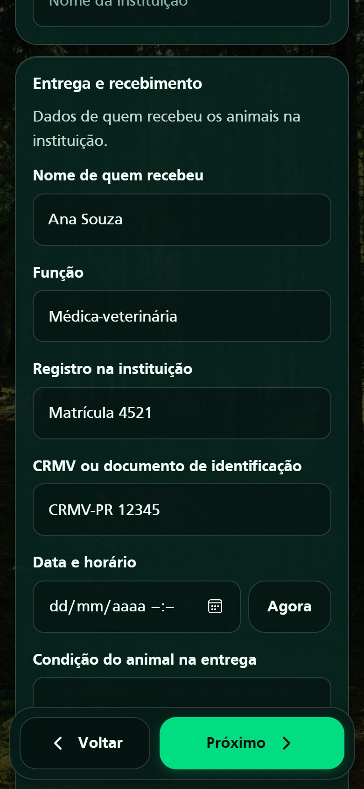
(a)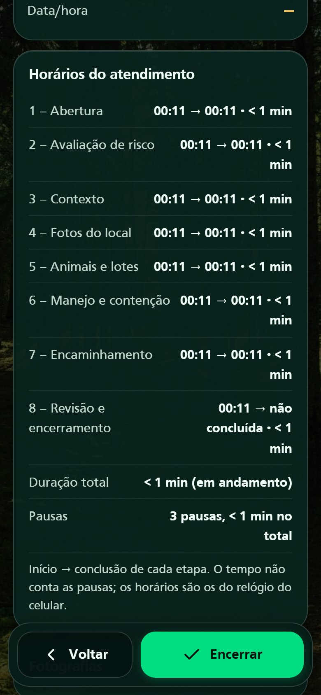
(b)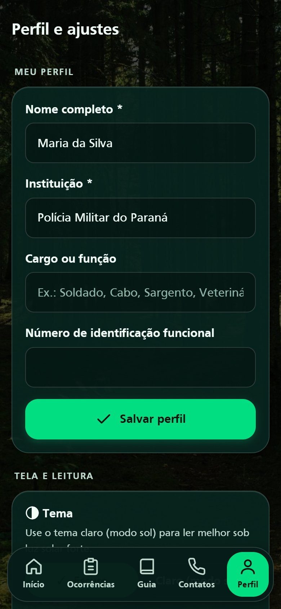
(c)Fonte: elaborado pelos autores (2026), com dados fictícios; em (b), atendimento simulado por teste automatizado, por isso as etapas duram menos de um minuto.
Figura E.2 – Primeira e terceira páginas de um relatório gerado pela aplicação
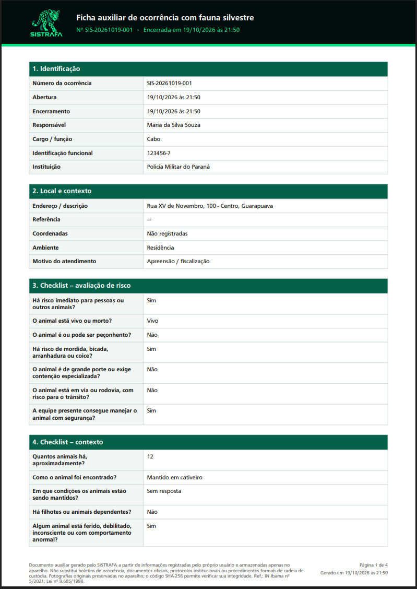
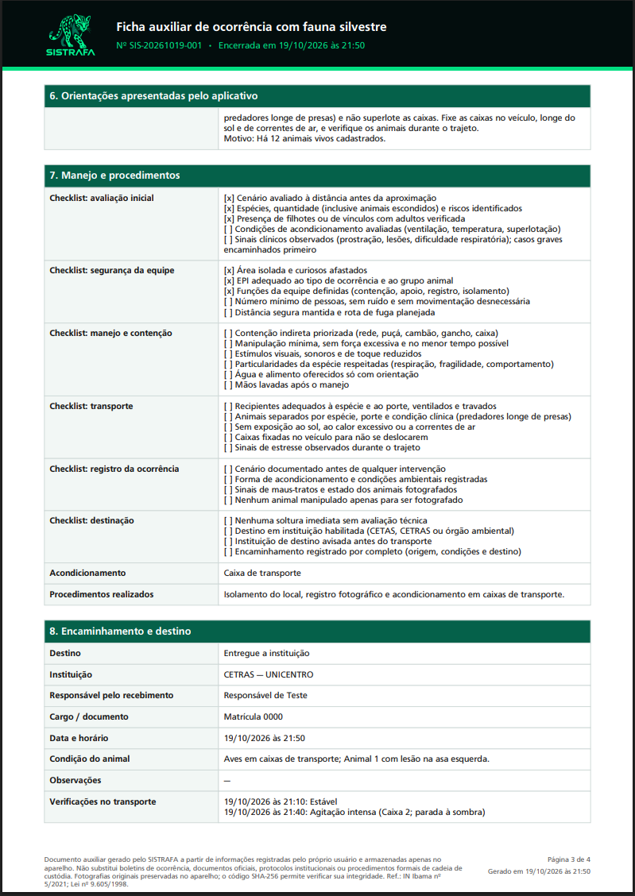
Fonte: elaborado pelos autores (2026), com dados fictícios e imagem de teste.
Quadro F.1 – Testes automatizados executados e resultados
| Conjunto | O que foi verificado | Resultado |
|---|---|---|
| Fluxo completo | Criação de perfil, oito etapas, respostas condicionais, cadastro de lote, encaminhamento, encerramento e relatório | Aprovado |
| Integridade e persistência | Gravação de texto ao trocar de tela antes do intervalo de gravação; manutenção de respostas, lotes, etapa e fotos após recarregar; falha simulada por falta de espaço, com indicação de erro e recuperação; foco preso em janelas e retorno ao elemento de origem; rótulos acessíveis; título da página por tela | 22 de 22 verificações aprovadas no Chrome e no Edge |
| Protocolo operacional e correções | Pergunta condicional sobre as condições dos animais; regras novas; respostas de perguntas ocultas desconsideradas; checklist por etapa; aviso e pendência de soltura; verificações do transporte; novas seções do relatório em HTML e PDF; ocorrência gravada pela versão anterior; transação do IndexedDB cancelada; contatos 24 horas; telas de consulta | 38 de 38 verificações aprovadas no Chrome e no Edge |
| Versão otimizada | Ausência de desfoque, filtros e animações contínuas em sete telas; bibliotecas de PDF carregadas sob demanda; miniaturas de fotos, inclusive sem createImageBitmap; formulário sem Object.fromEntries; fotos do guia e retorno ao ícone sem a imagem | 16 de 16 verificações aprovadas no Chrome e no Edge |
| Android (emulador, Android 17) | Instalação do APK; perfil, etapas e telas sem erro; regras; foto pela câmera do sistema e no IndexedDB, com SHA-256; GPS; Service Worker; PDF e cópia de segurança na pasta de downloads; modo avião, com aviso e PDF | 13 de 13 verificações aprovadas; câmera, rotação travada, tela cheia e teclado verificados manualmente |
| Horários e recebimento | Etapas, pausas e retomadas (saída, segundo plano, fechamento); dados de quem recebeu; revisão, HTML e PDF | 21 de 21 aprovadas no Edge; pausa conferida no emulador |
| Firefox | Perfil, oito etapas e demais telas sem erro; regras; foto no IndexedDB com conferência do SHA-256; transação cancelada; PDF; funcionamento sem conexão pelo Service Worker | 10 de 10 verificações aprovadas |
| Fotografias | Envio de arquivo de 6,7 MB pelo botão de câmera, confirmação, recorte, exclusão com motivo e conferência do SHA-256 do original | Aprovado; resumo do original inalterado após o recorte |
| Metadados Exif | Leitura de arquivo JPEG de teste com fabricante, modelo, data original e coordenadas | Todos os campos lidos corretamente |
| Guia on-line | Busca de espécie, ficha com dados da API e lista de espécies da região | Aprovado (requer conexão) |
| Relatório PDF | Geração com e sem conexão; fonte incorporada; texto extraível | Aprovado; cerca de 90 kB com uma foto |
Fonte: elaborado pelos autores (2026).
Tabela F.1 – Razões de contraste estimadas para os principais pares de cores
| Par de cores | Tema | Razão |
|---|---|---|
| Texto principal sobre superfície | Escuro | 14,9:1 |
| Texto secundário sobre superfície | Escuro | 10,2:1 |
| Texto terciário sobre superfície | Escuro | 6,7:1 |
| Cor de destaque (menta) sobre superfície | Escuro | 8,6:1 |
| Texto sobre botão principal | Escuro | 10,7:1 |
| Texto branco sobre botão de perigo | Escuro | 4,8:1 |
| Cor de alerta sobre superfície | Escuro | 9,5:1 |
| Cor de perigo sobre superfície | Escuro | 5,1:1 |
| Texto principal sobre superfície | Claro | 16,2:1 |
| Texto secundário sobre superfície | Claro | 9,2:1 |
| Texto terciário sobre superfície | Claro | 5,0:1 |
| Cor de destaque sobre superfície | Claro | 6,7:1 |
| Cor de alerta sobre superfície | Claro | 4,6:1 |
| Cor de perigo sobre superfície | Claro | 5,6:1 |
Fonte: elaborado pelos autores (2026).